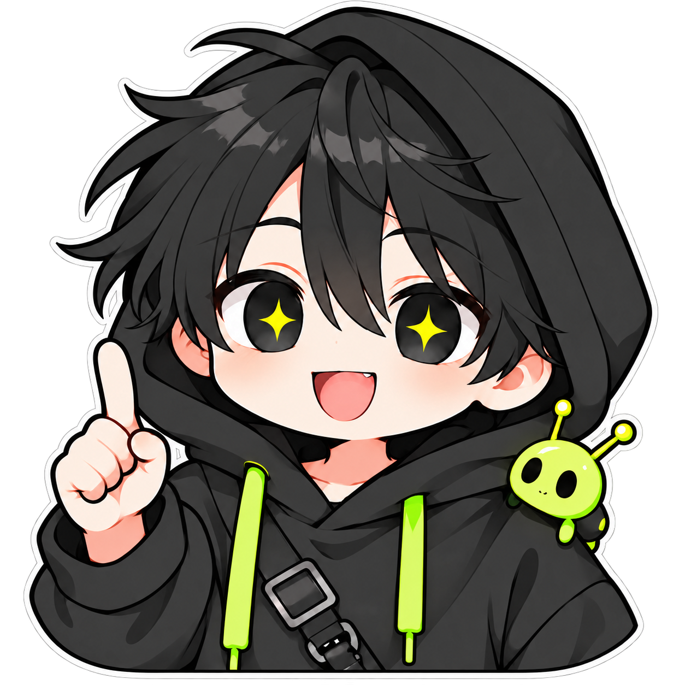

KIM DOYOON / GAME DEVELOPMENT PM
게임 개발 PM 지원자 김도윤입니다.
게임 개발과 팀 일정 관리를 경험했습니다.
직접 만든 게임과 앱, 팀에서 맡았던 일을 소개합니다.
프로젝트 살펴보기 ↓
BUG COLLECTOR / 버콜16인 팀 협업게임잼 우수상 3인 · 5일Google Play 앱 출시
01 / TEAM · 2024.08—12
미마미
제작 범위를 줄여 튜토리얼을 완성했습니다.
16인 팀에서 PD·프로그래머를 맡았습니다. AD·애니메이터와 잡몹과 애니메이션 수를 줄이기로 협의했고, 튜토리얼을 완성했습니다.
개인별 TODO 매일 확인 · 주 2회 회의 · 빌드 QA
자세히 보기 ↗02 / TEAM · 2024.01—05
버니 프로젝트 (Apocalypse)
멈춘 기능을 질의서로 정리했습니다.
기획서가 비어 개발이 멈춘 기능을 네 단계로 나눠 기획 회의에 가져갔습니다. 임원진 회의에서는 결정권과 기획→그래픽 전달 절차를 다시 정했습니다. 프로젝트는 중단됐습니다.
기획 질의서 · 회의록 · 범위 조정
자세히 보기 ↗03 / GAME JAM · 2024.07
빛을 향해서
5일 중 마지막 2일은 폴리싱에 썼습니다.
3일 동안 핵심 기능을 만들고, 남은 2일은 연출을 다듬었습니다. 처음 세운 일정대로 완성해 청강대 × 유니티 게임잼 우수상을 받았습니다.
3인 팀 · 5일 개발 · 게임잼 우수상
자세히 보기 ↗04 / CLUB · 2023.07—08
Dirty Guilty
QA 이슈 104건을 추적해 엔딩 8개를 완성했습니다.
작업을 WBS로 나누고, QA 이슈마다 재현 경로와 우선순위를 남겼습니다. 104건 중 92건을 완료했고, 본인이 맡은 64건 중 55건을 처리했습니다.
WBS · QA 시트 · 현업 피드백
자세히 보기 ↗05 / PRODUCT · 2026
러브 메모리
커플 앱을 만들어 Google Play에 출시했습니다.
연인의 일정과 사진을 한 달력에 담았습니다. 기획부터 출시까지 직접 진행하고, 운영 중 알림 수신 문제를 수정했습니다.
기획·디자인·개발·운영 담당
자세히 보기 ↗01 / SCOPE제작 범위 조정
미마미에서 잡몹과 애니메이션 수를 줄였고, 버니 프로젝트에서는 R&D가 길어진 기능을 되돌렸습니다.
02 / ALIGNMENT기획과 개발 맞추기
멈춘 기능을 질의서로 정리하고, 결정권과 기획→그래픽 전달 절차를 회의에서 정했습니다.
03 / FOLLOW-UP진행 확인과 QA
TODO를 매일 확인하고 주 2회 회의를 열었습니다. QA 이슈는 재현 경로와 우선순위로 추적했습니다.
ABOUT DOYOON
소개
Unreal·Unity로 게임을 만들고 웹·앱을 출시했습니다.
버그 콜렉터, 버콜로 개발 과정을 기록합니다.
버콜 YouTube ↗개발Unreal · C++ / Unity · C# / React · Next.js
협업기획 질의서 · 회의록 · TODO 관리 · 빌드 QA · UML · Git·Blueprint 가이드
도구Discord · Google 문서·시트·폼 · GitHub
학력·활동청강문화산업대학교 게임 전공 · 2023년 입학
군 복무로 휴학 중 · 한얼 동아리 운영진·스터디장
C언어 스터디 5주 과정 설계·운영 · 만족도 조사
AVAILABILITY
2026년 12월 입사 가능
학기 중 3개월은 주 4일, 그 외에는 주 5일 근무 가능
2026년 11월 25일 전역 예정